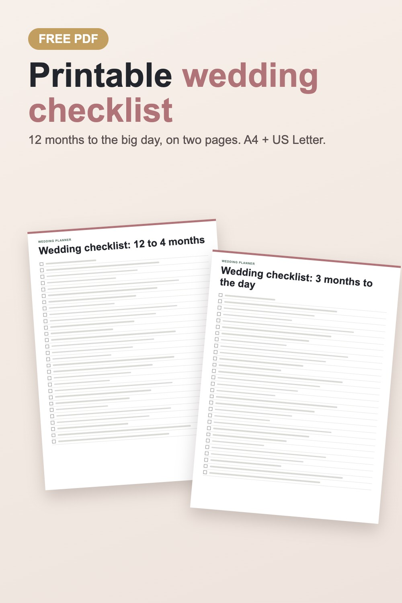

A 12-month wedding planning timeline on two pages: what to book and do at every stage, from 12 months out to the week of the wedding. No sign-up, just download.
3 to 1 months before: menu, vows, marriage license, RSVPs, seating chart
2 weeks and the week of: final count, vendor timeline, final payments, emergency kit
After the wedding: returns, thank-you notes
Space for your own tasks on every page

Planning the whole wedding?
The 40-page Wedding Planner adds the budget, payment tracker, 3 guest list pages, a seating chart, vendor comparisons, a wedding day timeline, a photo shot list and a honeymoon planner. Hyperlinked for iPad.